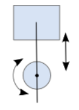

| Available since LÖVE 0.8.0 |
| This function is not supported in earlier versions. |
Creates a wheel joint.

joint = love.physics.newWheelJoint( body1, body2, x, y, ax, ay, collideConnected )
Body body1Body body2number xnumber ynumber axnumber ayboolean collideConnected (false)WheelJoint jointjoint = love.physics.newWheelJoint( body1, body2, x1, y1, x2, y2, ax, ay, collideConnected )
Body body1Body body2number x1number y1number x2number y2number axnumber ayboolean collideConnected (false)WheelJoint joint